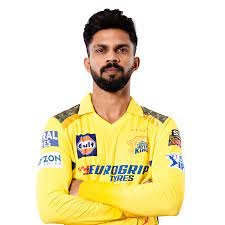

Mahendra Singh Dhoni
(born 7 July 1981) is an Indian professional cricketer who plays as a right handed batter and a wicket-keeper.
Widely regarded as one of the most prolific wicket-keeper-batsmen and captains, he represented the Indian cricket
team and was the captain of the side in limited-overs formats from 2007 to 2017 and in test cricket from 2008
to 2014.Dhoni has captained the most international matches and is the most successful Indian captain. He has
led India to victory in the 2011 Cricket World Cup,the 2007 ICC World Twenty20 and the 2013 ICC Champions Trophy, the only captain to win three different limited overs tournaments. He also led the teams that won the Asia Cup in 2010,
2016 and was a member of the title winning squad in 2018.

Ruturaj Dasharath Gaikwad (born 31 January 1997) is an Indian international cricketer who captains the Maharashtra cricket team in the T20, List A format and the current captain of Chennai Super Kings in the Indian Premier League (IPL).[2][3] He made his international debut for the India cricket team in July 2021 against Sri Lanka. He was the captain of the India squad which won the gold medal at the 2022 Asian Games. He was the leading run-scorer in the 2021 IPL season.[4] He is captain of the Maharashtra team in T20 and List A cricket.[5][6] He is the only Indian player to score a century against the Australian international team in T20Is.
Matheesha Pathirana is a professional Sri Lankan cricketer who currently plays limited overs cricket for the national team. He has been referred to as Baby Malinga, as he has modelled his bowling action after Lasith Malinga in sling action.